What is LinkDroid?
LinkDroid is an Android application that can post
media, such as images, to defined
Webhooks when users selects the
"Share" option. LinkDroid can also post broadcasted events (by
Android, or other programs) to Webhooks (via a background
service) as specified by registered IntentFilters.
We have set up a LinkDroid
Demo site to which one can post.
LinkDroid is Open Source. Its main repository is hosted on github:
http://github.com/badpopcorn/linkdroid
LinkDroid Walkthrough
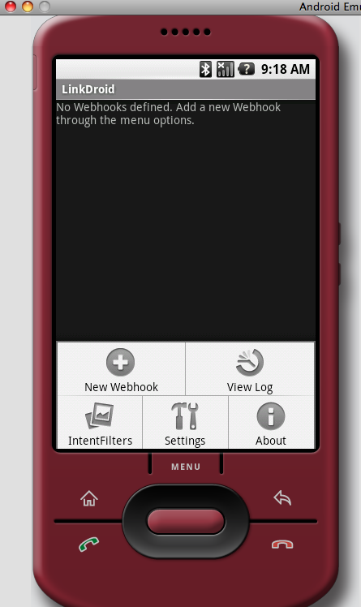
When launching LinkDroid, you are taken to the Webhook list. This
is the main part of the application where saved Webhooks are listed. It
is a blank list when first starting. Here we also see the different
menu options available.
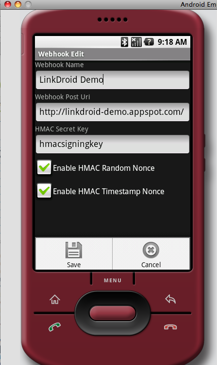
By clicking New Webhook, we can edit the Webhook's properties. Here
we entered the name, Link Droid demo site URI, HMAC signing key and
that we wanted Nonces. Note that HMAC signatures are only calculated
and sent along with the post to the Webhook if the signing key is
a non-blank value. We use the menu to cancel or save new or existing
webhooks; same with the Nonces.
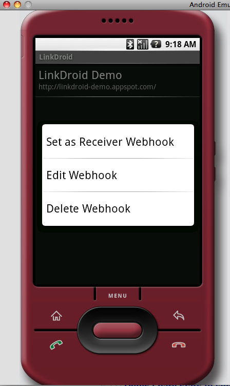
Here we're back at the main Linkdroid Webhook List Activity and have
opened the Conext Menu (Long hold) of the saved LinkDroid Demo Webhook.
This is where you primarily go to select to edit or delete the webhook.
Selecting Delete will pop open a confirm dialog, and edit will send
you to the edit screen. The "Set as Receiver Webhook" option will copy
this particular Webhook's properties to saved settings and be used
as the Webhook to which we post registered broadcast intents.
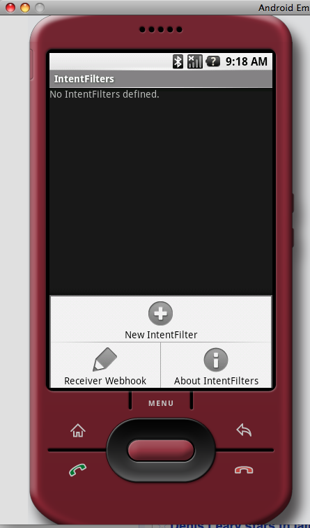
The Android system has a message passing mechanism and uses Intents
as the underlying message. Such messages can be broadcasted and
received by multiple applications. LinkDroid can be one of those
applications.
Here we're in the LinkDroid's Intent Filters screen. This is where
one registers for the Android Broadcast Intents that one wants to
listen for and post to the Receiver Webhook.
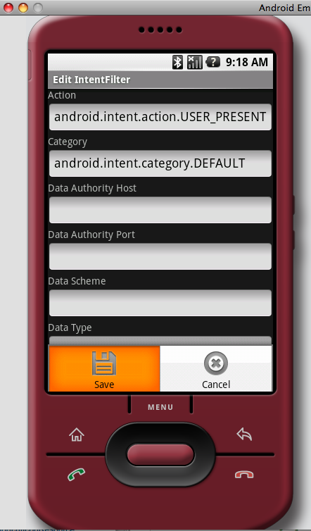
By clicking the "New IntentFilter", one can register a template
for what kind of Intent to listen for. Here we enter specific
values-- more found in Android developer documentation, or other application
documentation-- for a broadcasted event when the user unlocks the
phone's keypad. We specifically enter the default category, but
LinkDroid will use this category if the category value is left blank.
We leave the other values blank, but one can add those specific values
for different broadcast intents. Also note that even though
an Android IntentFilter can have multiple categories, schemes and types,
LinkDroid only allows a single value for each. Please read the
Android documentation about IntentFilters for more info
about these fields. We finally use the menu to save or cancel this
IntentFilter.
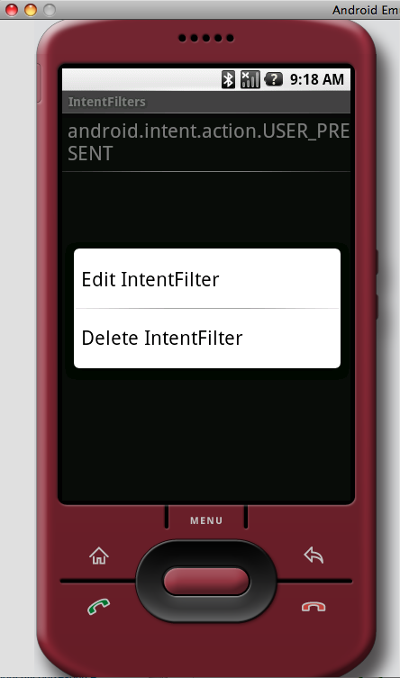
Back at the IntentFilter screen, we see the saved filter and that
we can open the context menu to edit or delete any given filter.
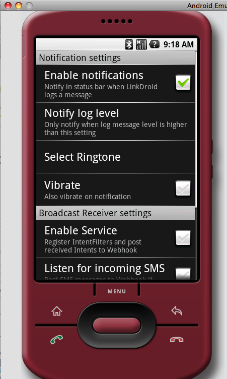
Going back to the main screen, we then open the Settings. Here we can
enable notifications to appear on the phone's status bar when
LinkDroid completes an action. Whenever LinkDroid completes an action,
it will log an item at a given log level. Successful posts will
be logged as INFO level, and errors at ERROR. Miscellaneous actions
are at DEBUG. So one can potentionally receive many notifications
depending on what log level is set. The Select Ringtone and Vibrate
notification options are respectively set to silent and off.
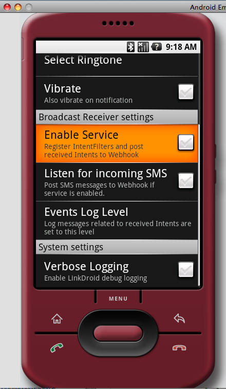
Before, we mentioned that LinkDroid can listen for broadcasted events.
But we only do this if we enable that service. By default it is turned
off. Also, both as a demonstration and because SMS events are formatted
in a special way, LinkDroid has built in an SMS event handler. By
default it is off. LinkDroid will post to the Receiver Webhook
for every SMS message received when the Service and SMS is enabled.
By default, posting these types of events to the Receiver Webhook
is not logged (NONE). It will not show up in the log. It is recommended
to set the level to DEBUG if one wants to see that stuff in the log.
Setting this equal to the Notification Log Level can result in
a flood of notifications. Finally we have system verbose logging.
This primarily logs DEBUG messages to the log on things such as
LinkDroid background service starts and stops. It is only recommended
for debugging LinkDroid (additional log messages can be seen via
adb logcat).
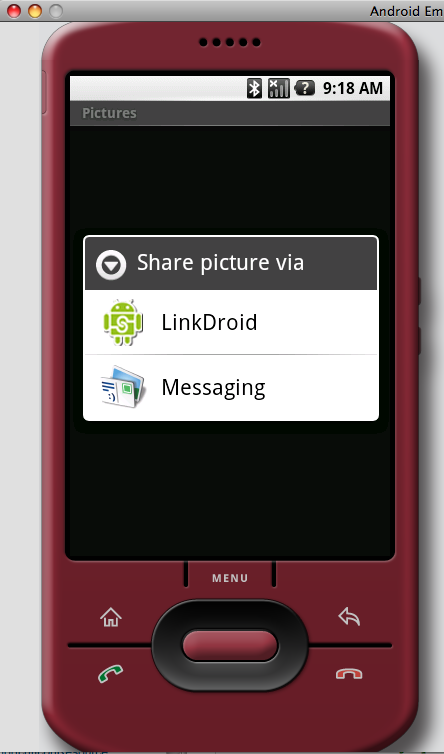
Finally to Sharing stuff. One can use the normal Android interface to
share items such as Pictures and Movies (now in Cupcake release). Simply
click "Share" as an option when viewing the media and it will pop open
a list such as the following. The emulator has two options: LinkDroid
and Messaging. A real phone may include GMail and Picasa. We select
LinkDroid.
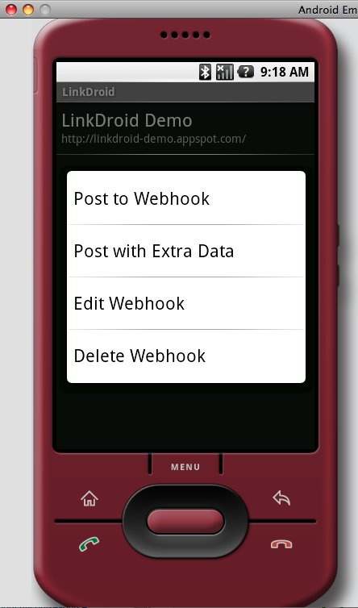
We are sent to a screen that looks just like the Webhooks list screen,
except that clicking an item will post the shared media to the selected
Webhook. And also that each Webhook item has a different context menu.
In addition to editing and deleting the Webhook, post options have
been added to this context menu. "Post to Webhook" will just send
the data to the Webhook.
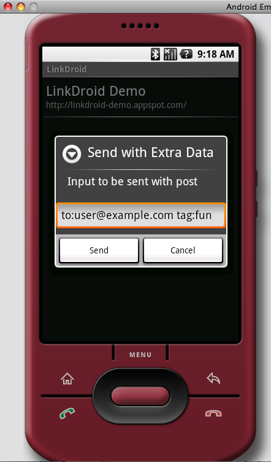
When selecting "Post with Extra Data", an input dialog is displayed
for user input. The input is a free form one line text, and this
data is interpreted by the receiving Webhook. In this example,
I demonstrate a hypothetical format that allows the user to specify
TO and TAG values. If the user selects cancel (or backs out), the
post action to this Webhook is not initiated.
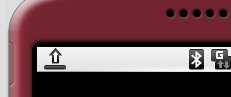
But if the user clicks Post, then the data is queued for sending
by a background service. Posts are processed sequentially, and
notifications may appear when completed.
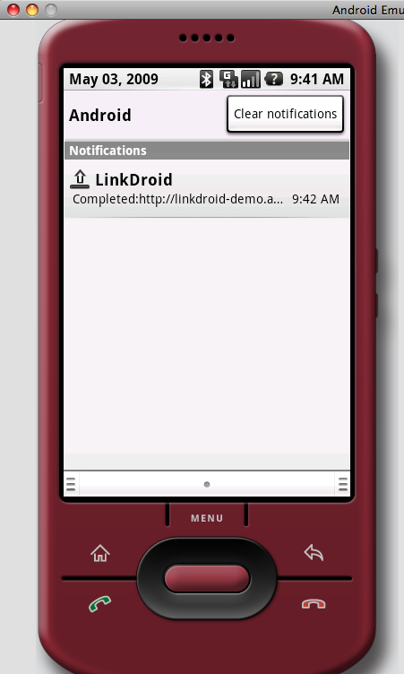
Looking at the phone notification pulldown will display a little
more info. Clicking it will take you to the LinkDroid log screen.
We also see that it completed successfully, so we can go to
the
linkdroid demo site
to view the post.
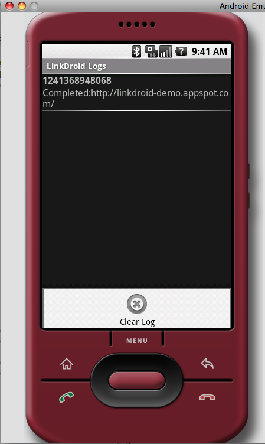
Here we see the log screen with the succesfully completed post. This
image also shows that we have the screen's menu open so we can
clear the log. Logs exist in the database until we manually
clear it. Hit the back or home to navigate away from this screen.
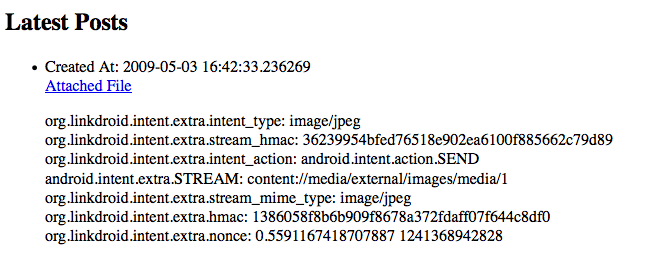
On the LinkDroid Demo site, we see that the following info has
been posted.
Webhooks
LinkDroid will post to Webhooks using multipart mime encoding, and
will post an Intent's extra data serialized to string (Essentially,
just a toString() call to each object in the Intent's data bundle).
LinkDroid also adds specific post variables:
| org.linkdroid.intent.extra.intent_action |
The action of the Intent received by LinkDroid that initiated the
Webhook post |
| org.linkdroid.intent.extra.intent_type |
The mimetype of the originating Intent |
| org.linkdroid.intent.extra.intent_categories |
The string serialized list of the originating Intent's categories |
| org.linkdroid.intent.extra.hmac |
Our lowercase hex calculated HMAC of the content posted. This particular
HMAC is calculated over the lexically sorted list of post
variables excluding the
"org.linkdroid.intent.extra.stream" variable and its value. Variables
such as "org.linkdroid.intent.extra.stream_hmac" are still used
in calculating this HMAC. For each
variable (lexical sorted) add the variable name to the HMAC digest
immediately followed by the same variable's value. |
| org.linkdroid.intent.extra.nonce |
A Nonce string added to each Webhook Post when we calculate
the HMAC for the variable HMAC and the STREAM HMAC. This Nonce
is entered normally with the post variables HMAC, but is used
differently in calculating the STREAM_HMAC. This Nonce
is prepended to the stream data on the HMAC. The value of this
Nonce is simply a string. It will be one of the three:
- A random number between 0 and 1.
- A timestamp in microseconds
- The random number followed by the timestamp, separated by a space
|
| org.linkdroid.intent.extra.stream |
This is the Base64 encoded data of EXTRA_STREAM value of
posted Intent. Android normally sends a local android URI in the Intent
when sharing items such as photos. LinkDroid opens that URI and
dumps its contents into this post variable (Base64).
|
| org.linkdroid.intent.extra.stream_hmac |
This is the hex calculated HMAC of the shared value before the
shared data is Base64 encoded. A Nonce may be prepended to the
pre-Base64 encoded data as part of the HMAC calculation. |
| org.linkdroid.intent.extra.stream_mime_type |
This is the mimetype detected of the stream URI. It most likely
will duplicate the originating Intent's mimetype, but not
necessarily always |
| org.linkdroid.intent.extra.sms_pdu |
The original PDU of this message that was received by the phone.
One can use the industry standard to decode this message for extra data.
|
| org.linkdroid.intent.extra.sms_body |
The body of the sms received |
| org.linkdroid.intent.extra.sms_from |
Who sent the SMS. This is a phone number or email |
| org.linkdroid.intent.extra.user_input |
The User's manual input (optionally present) when posting to the
Webhook. |
Easy importing Webhook
One open a link via the Android browser to make it easy to
import predefined LinkDroid Webhooks or LinkDroid IntentFilters.
Just set the htaccess for Apache to return the proper mime types.
And once a user opens the file through the browser via the web
it will then launch the respective Edit dialogs so it can be saved.
AddType application/vnd.android.package-archive apk
Addtype application/vnd.linkdroid.webhook lwh
Addtype application/vnd.linkdroid.intentfilter if
The following is an example of a LinkDroid Webhook JSON file.
{
"name": "linkdroid demo site",
"uri": "http://linkdroid-demo.appspot.com/",
"secret": "",
"nonce_random": false,
"nonce_timestamp": false
}
The following is an example of a LinkDroid IntentFilter JSON file.
{
"action": "org.linkdroid.x.demo",
"category": "android.intent.category.DEFAULT",
"data_authority_host": "",
"data_authority_port": "",
"data_scheme": "",
"data_type": ""
}
Webhook Notes
- The Webhook URI can have a HTTPS scheme to secure the communication
- The HMAC is used to authenticate the post to an originating user
- I suggest creating a URI that can be used by the receiving Webhook
service to lookup a user to match the HMAC against.
- Any query param in the Webhook post URI will be sent along in the
Webhook post, but will be EXCLUDED from the HMAC calculation. It is
the responsibilty of the receiving Webhook to identify and
ignore such query params